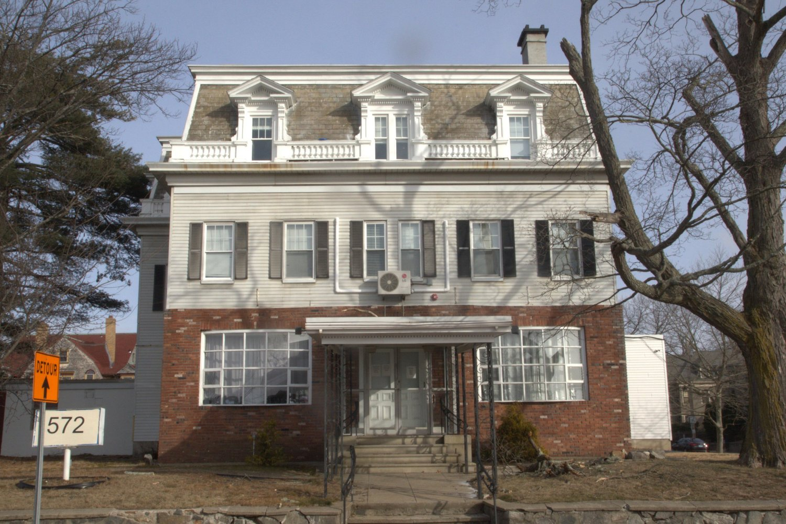
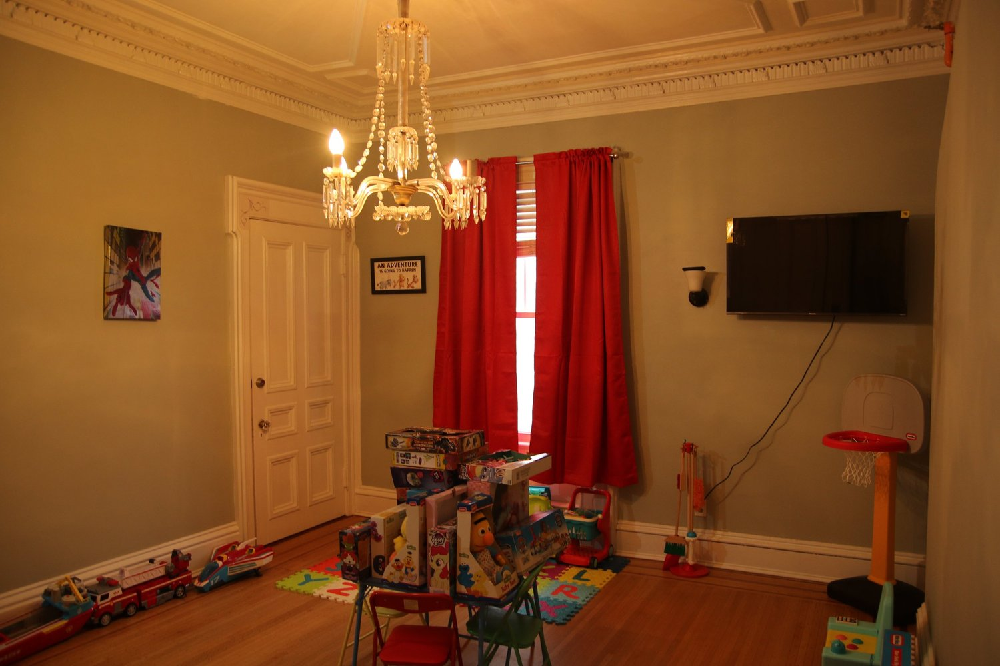

Women & Children’s Transitional Housing Program
In December 2023, OpenDoors opened a new transitional recovery house for women and children. At its full capacity, this 10,000 square foot home provides housing for 49 individuals—women, women with children, and women progressing towards reunification. Individuals receive wraparound support, including help with employment, health, and housing goals. The house is the only recovery home for women and children specifically for justice-involved women and is part of the OpenDoors She Thrives program, which assists women as they are being released from prison as they work towards family reunification.
Read more about the opening in the front-page Providence Journal article.
Thank you to everyone who helped make this opening possible, including Mayor Brett Smiley for providing funding and permitting, the RI Department of Housing, United Way of Rhode Island, Rhode Island Foundation, Feast & Fettle, the Champlin Foundation, and the Papitto Opportunity Connection for generously providing additional funds.


Watch this 90 second video about our women’s reentry houses and program.